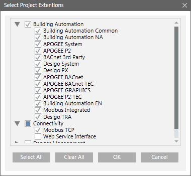

Select Project Extensions Dialog Box
When you click Create Project  , the Select Project Extensions dialog box allows you to select and include the extensions out of the installed extensions on your system.
, the Select Project Extensions dialog box allows you to select and include the extensions out of the installed extensions on your system.

Select All: Selects all the extensions available under all the listed suites.
Clear All: Clears all previous selections.
OK: Closes the dialog box and proceeds with the project creation.
It is recommended to include only required extensions in the project by expanding the extension suite and then selecting the required extensions for adding them in the project that you are about to create.
Mandatory extensions and the extensions on which the mandatory extension depends, both are not available for addition/removal in the Select Project Extensions dialog box. Such extensions are always included to the project during creation or upgrade.